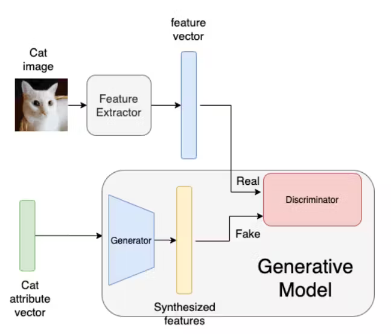
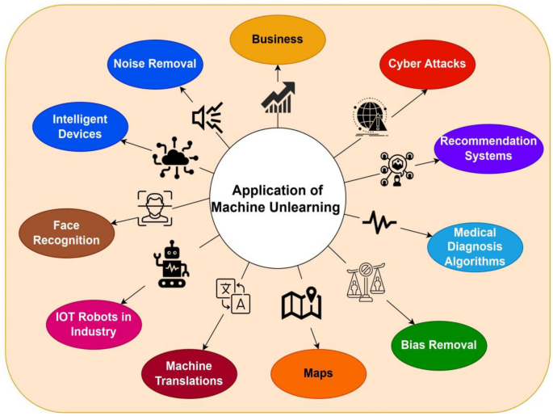

Professorship of Distributed and Self-Organizing Systems
Technical University Chemnitz
Chemnitz, Germany
Abstract
This seminar report explores the concept of machine unlearning, highlighting its significance in ethical data
practices and compliance with privacy regulations. We discuss various methods and approaches, their applications
in different sectors, and evaluation metrics for assessing their effectiveness. The report aims to provide a
comprehensive understanding of machine unlearning and its implications for AI and privacy.
1 Introduction
Author: Karan Dhanawade
This section introduces the concept of machine unlearning, highlighting its importance in ensuring ethical data
practices and compliance with privacy regulations.
1.1 Overview and Importance
"Machine learning has become a ubiquitous technology, influencing everything from product recommendations to fraud
detection systems" [1]. This power, however, comes with the responsibility of ensuring ethical
data practices. Large datasets used to train ML models can inadvertently capture and store personal information.
This necessitates a new approach to data management, balancing the need for model efficacy with user privacy.
1.2 Regulatory Mandates: The Right to be Forgotten
The "Right to be Forgotten" is a crucial aspect of modern privacy regulations, most notably embodied in the
European Union's General Data Protection Regulation (GDPR) [2]. This regulation, which came into
effect in May 2018, represents a significant step forward in giving individuals control over their personal data.
It empowers individuals to request the deletion of their data from organizational databases, ensuring that their
personal information is not retained longer than necessary. GDPR has profoundly impacted how organizations handle
data, setting a high standard for privacy practices globally. Many countries have adopted similar regulations to
protect their citizens' data. For instance, the California Consumer Privacy Act (CCPA) in the United States
provides similar rights to individuals, allowing them to request the deletion of their personal information and
ensuring transparency in data handling practices. Applying the "Right to be Forgotten" to machine learning models
presents unique challenges. Unlike traditional databases, where data points can be easily identified and removed,
ML models embed information in a complex, interwoven manner. When an ML model is trained, it captures patterns and
relationships from the data, making it difficult to isolate and remove the influence of specific data points
without affecting the model's overall functionality. Real-world cases illustrate the challenges and necessity of
this regulation. In 2014, the European Court of Justice ruled in favor of Mario Costeja González, who requested
Google to remove links to newspaper articles about his past financial troubles. This landmark case highlighted the
importance of the "Right to be Forgotten" and set a precedent for future regulations. Data breaches at companies
like Facebook and Equifax underscore the need for robust data protection practices and the ability to erase
personal information upon request. Compliance with GDPR and similar regulations involves ensuring that ML models
trained on this data no longer retain any residual information. This is where the concept of machine unlearning
becomes critical. It provides a framework for selectively removing data from models, ensuring compliance with
privacy laws while maintaining the integrity and functionality of the models.
1.3 The Challenge of Data Retention in ML Models
The very nature of ML models presents another hurdle. These models learn and adapt over time, continuously
refining their predictions based on new data. This ongoing learning process makes it difficult to isolate and
remove the influence of specific data points, especially for models trained on massive datasets [3]. Additionally, completely retraining an ML model can be a resource-intensive and
time-consuming process.
1.4 Emergence of Machine Unlearning
In response to these challenges, the field of machine unlearning (MU) has emerged. MU focuses on developing
techniques to selectively remove specific data points or their influence from a trained model, essentially
allowing the model to "forget" irrelevant or outdated information. This enables us to comply with regulations like
the Right to be Forgotten while preserving the functionality of the model [4].
2 Background
Author: Md Hafizur Rahman
This section provides an extensive overview of machine unlearning, clearly defining the concept and outlining its
essential components and motivations.
2.1 Definition and Conceptual Framework
"Machine unlearning can be broadly defined as the deliberate process of removing the influence of specific data
points or their associated information from a trained ML model" [1]. This process allows the
model to essentially "forget" irrelevant or outdated information, thereby improving its adaptability and ensuring
compliance with stringent privacy regulations [4]. Here is a conceptual framework illustrating
the key elements of machine unlearning (cf. figure 1):
Initial Training Phase: On the left, a set of images (including those of different individuals)
is used to train a model, creating a pre-trained model. This process is depicted by the blue dashed line.
Forget Set: A subset of the training data, referred to as the "forget set" (highlighted with a
red border), is identified. This subset consists of the data that needs to be forgotten or removed from the
model.
Unlearning Algorithm: The pre-trained model, along with the forget set, is fed into an
unlearning algorithm (illustrated with an eraser). This algorithm modifies the pre-trained model to produce an
"unlearned model," which no longer retains the information from the forget set.
Gold Standard: Separately, a new model is trained from scratch using the same original data but
excluding the forget set. This results in a gold standard model (depicted in green), representing what the model
should ideally look like if the forget set had never been included in the training data.
Comparison: The unlearned model (produced by the unlearning algorithm) is compared to the gold
standard model. The comparison assesses "How close are these models?" to determine the effectiveness of the
unlearning process.
The motivations for machine unlearning are multifaceted and significant:
Privacy Compliance: Regulations such as GDPR empower individuals to request the deletion of
their data. Machine unlearning facilitates compliance by enabling models to "forget" such data while maintaining
their functionality.
Improved Model Adaptability: Real-world data is dynamic, with outdated or irrelevant
information becoming burdensome over time. Machine unlearning allows models to adapt by forgetting such data,
potentially enhancing their performance on new, unseen data.
Safety and Security Concerns: In safety-critical applications (e.g., self-driving cars), biased
or erroneous data can lead to dangerous outcomes. Machine unlearning can help mitigate these risks by removing
the influence of such problematic data.
Ethical Considerations: Ensuring that models do not retain data that subjects have chosen to
delete supports ethical data practices and respects individual privacy rights.
3 Machine Unlearning Methods and Approaches
Author: Md Hafizur Rahman
This section explores various techniques and algorithms used for machine unlearning, including data perturbation,
model retraining, and algorithmic modifications.
3.1 Overview of Existing Techniques
Machine unlearning encompasses a range of techniques designed to enable models to forget sensitive or outdated
data. These techniques can be broadly categorized into three main approaches:
Data Perturbation: This approach modifies the original data to reduce its memorability by the
model. Techniques include adding noise, scrambling data points, or applying differential privacy mechanisms [4].
Model Retraining: This approach involves retraining the model on a modified dataset that
excludes the data to be forgotten. This can be achieved through various techniques, such as data deletion,
aggregation, or anonymization [5].
Algorithmic Techniques: This approach leverages algorithmic modifications to the learning
process itself to enable forgetting. Techniques include synaptic pruning in neural networks, masking weights, or
incorporating forgetting functions into the learning objective [4].
The choice of technique depends on various factors, including the type of data, the model architecture, and the
desired forgetting guarantees [4].
3.2 Algorithms for Data Removal from ML Models
Several algorithms have been proposed for removing data from machine learning models while preserving model
utility. Here are some key examples:
SISA (Sharding): This approach involves partitioning the training data into smaller,
non-overlapping subsets called shards. Multiple models are trained on these individual shards. When a data point
needs to be forgotten, only the models trained on the shards containing that data point need to be retrained,
rather than retraining the entire model. This reduces the computational cost of unlearning [5].
NTK (Neural Tangent Kernel): The Neural Tangent Kernel is a mathematical framework that
approximates the behavior of neural networks during training. NTK-based methods can efficiently update the model
weights to forget specific data points without requiring full retraining by leveraging the NTK approximation [5].
SCRUB: This technique involves analyzing the gradients and updates associated with the data
points during training and then "scrubbing" or subtracting their influence from the model's parameters. SCRUB
effectively reverses the contributions of the data points to be forgotten [5].
Zero-Shot Machine Unlearning: This method addresses scenarios where no original training data
is available for unlearning. Zero-shot unlearning can be accomplished using techniques like generating synthetic
data that mimics the properties of the original data, leveraging generative models, or using other forms of
auxiliary information [9].

Figure 4: Concept of Zero-Shot Machine Unlearning [11]
Forgetting Factor (FF) based methods: These methods introduce a forgetting factor into the
model's learning objective function, which gradually reduces the influence of past data points over time [4].
Synaptic Pruning: Inspired by biological forgetting mechanisms, this technique removes or
weakens connections (synapses) in artificial neural networks that are associated with the data to be forgotten
[5].
Knowledge Distillation: This technique involves training a smaller model on the outputs of a
larger model, effectively compressing the knowledge of the larger model while forgetting specific data points [4].
The effectiveness of these algorithms depends on the specific implementation and the characteristics of the data
and model [5].
4 Applications and Use Cases of Machine Unlearning
Author: Karan Dhanawade
This section discusses the practical applications of machine unlearning in different sectors such as healthcare,
financial services, and recommendation systems, emphasizing its role in privacy preservation and data protection.
4.1 Privacy Preservation in AI Systems
The ability to "forget" sensitive data is crucial for ensuring user privacy in AI systems. Machine unlearning can
be employed to:
Remove individual data points: Techniques like forgetting factors or selective forgetting can
be used to remove specific data points related to individuals who request to be forgotten from a model,
complying with regulations like GDPR [2].
Mitigate data poisoning attacks: Adversarial attacks can manipulate training data to bias a
model's output. Machine unlearning can identify and remove poisoned data points, improving model robustness [4].
4.2 Compliance with Data Protection Regulations
Data protection regulations like GDPR grant individuals the "right to be forgotten." Machine unlearning provides a
mechanism to enforce this right by enabling the removal of personal data from trained models [2]. This ensures compliance and fosters trust in AI systems that handle sensitive data.
4.3 Real-world Scenarios and Case Studies
Machine unlearning holds promise in various real-world applications. Here are some potential use cases:
Healthcare: A patient's medical history might evolve over time. Machine unlearning could be
used to remove outdated data from a disease prediction model, ensuring its accuracy reflects current health
conditions [4].
Financial Services: Fraudulent transactions can bias fraud detection models. Machine unlearning
could be used to remove such data points, improving the model's ability to identify future fraudulent activities
[5].
Recommendation Systems: User preferences can change over time. Machine unlearning could be used
to forget outdated user interactions, leading to more relevant recommendations in e-commerce or social media
platforms [5].
Additionally, machine unlearning has been applied to:
Facial Recognition Systems: In facial recognition, personal identities must be forgotten upon
request to comply with privacy laws. Techniques like zero-shot machine unlearning have been used to remove
personal identities from models without accessing original training data [9].
Autonomous Vehicles: In safety-critical applications like autonomous driving, removing
erroneous or biased data from models ensures safer navigation and decision-making [7].
Social Media and Content Platforms: Unlearning can be used to delete users' data upon request,
ensuring compliance with data protection regulations and enhancing user trust [5].

Figure 5: Application of Machine Unlearning [13]
While these are just a few examples, the potential applications of machine unlearning are constantly expanding as
the field matures.
5 Evaluation and Metrics
Author: Md Hafizur Rahman
This section covers the essential metrics and methods used to evaluate the effectiveness of machine unlearning,
including data removal rate, model utility preservation, and privacy leakage assessment. These metrics are crucial
for determining how well a machine learning model has managed to forget specific data points.
5.1 Metrics for Assessing Unlearning Effectiveness
Developing effective metrics to assess how well a model has forgotten specific data is an ongoing area of
research. Here are some common metrics used:
Data Removal Rate: This metric measures the percentage of data points that have been
successfully removed from the model's memory [5]. A higher data removal rate indicates a more
effective unlearning process.
Model Utility Preservation: This metric evaluates how well the model performs on the remaining
relevant data after forgetting the target data points [5]. This can be measured using standard
accuracy, precision, recall, or F1 score metrics depending on the application. Maintaining high utility while
achieving unlearning is a critical balance.
Privacy Leakage: This metric assesses the amount of information about the forgotten data points
that can still be inferred from the model. Techniques like differential privacy analysis can be used to quantify
this leakage [4]. A lower privacy leakage score indicates better compliance with privacy
requirements.
The choice of metrics depends on the specific goals of machine unlearning in a particular application. Different
applications might prioritize different aspects of unlearning effectiveness.
5.2 Comparative Analysis of Unlearning Methods
Comparing the effectiveness of different machine unlearning techniques is essential for selecting the most
appropriate approach for a given scenario. Here are some factors to consider:
Type of Data to be Forgotten: Different techniques might be more suited for forgetting specific
data points, features, or entire datasets [4], [5]. The nature of the data
to be forgotten can significantly influence the choice of unlearning method.
Model Architecture: The underlying architecture of the machine learning model can influence the
effectiveness of different unlearning techniques [5]. Some methods may be more compatible with
certain types of models than others.
Trade-off between Forgetting and Utility: There is often a trade-off between how much data is
forgotten and how well the model performs on the remaining data. Different techniques might achieve varying
levels of this trade-off [4]. Understanding this balance is crucial for implementing effective
unlearning.
Researchers are actively developing frameworks and benchmarks to enable systematic comparison of machine
unlearning methods [8]. These frameworks help in understanding the strengths and weaknesses of
various approaches under different conditions.
5.3 Challenges in Quantifying Unlearning Performance
Quantifying the effectiveness of machine unlearning presents unique challenges that need to be addressed for
robust evaluation:
Ground Truth Definition: Defining what constitutes "forgotten" data can be complex, especially
when dealing with nuanced privacy concerns [4]. Establishing clear criteria for what needs to
be forgotten is critical for accurate assessment.
Limited Observability: Unlike training data, forgotten data is no longer available, making it
difficult to directly assess how well it has been removed [5]. This lack of visibility poses a
significant challenge for evaluation.
Indirect Metrics: Metrics like privacy leakage rely on estimating the information an adversary
can infer about forgotten data, which can be imprecise [4]. Indirect measurements can
introduce uncertainty into the evaluation process.
Researchers are exploring new approaches to address these challenges and develop more robust evaluation
methodologies for machine unlearning. Innovations in this area will be crucial for advancing the field and
ensuring that unlearning techniques are both effective and reliable.
6 Future Directions and Emerging Trends
Author: Karan Dhanawade
This section highlights the ongoing research and future trends in machine unlearning, such as advanced algorithms,
real-time unlearning, and integration with other privacy-enhancing technologies.
6.1 Innovations in Machine Unlearning Techniques
Innovations in machine unlearning are expected to address current limitations and enhance the efficiency and
effectiveness of unlearning methods. Some of the key areas of innovation include:
Advanced Algorithms: Development of more sophisticated algorithms that can efficiently and
accurately remove the influence of specific data points from ML models without requiring complete retraining.
These algorithms may leverage advancements in optimization techniques and deep learning architectures [8].
Real-time Unlearning: Techniques that enable real-time unlearning to handle dynamic data
environments where data is continuously updated. This involves developing methods that can quickly adapt to new
information and remove outdated or irrelevant data points on-the-fly [4].
Scalability: Innovations focused on improving the scalability of unlearning methods to handle
large-scale datasets and complex models. This includes optimizing computational resources and reducing the time
required for the unlearning process [3].
6.2 Integration with Other Privacy-Enhancing Technologies
Machine unlearning will likely be integrated with other privacy-enhancing technologies to create more
comprehensive solutions for data privacy and security. Key areas of integration include:
Federated Learning: Combining machine unlearning with federated learning to ensure that data
can be forgotten not only at the central model level but also across distributed networks. This is particularly
important for applications involving sensitive data that cannot be centrally stored [3].
Differential Privacy: Incorporating differential privacy techniques to provide formal
guarantees about the privacy of the unlearning process. This helps ensure that the data removal process does not
inadvertently leak sensitive information [4].
Blockchain Technology: Utilizing blockchain to create transparent and tamper-proof logs of data
deletion requests and unlearning processes. This can enhance trust and accountability in how data is managed and
forgotten [3].
6.3 Potential Impact on AI Development
The adoption of machine unlearning techniques will have significant implications for the development and
deployment of AI systems:
Enhanced Trust and Adoption: By addressing privacy concerns and regulatory requirements,
machine unlearning can enhance public trust in AI systems, leading to broader adoption across various sectors,
including healthcare, finance, and social media [2], [5].
Ethical AI Development: Machine unlearning promotes ethical AI development by ensuring that
models do not retain outdated or biased information, thus reducing the risk of discriminatory outcomes and
enhancing the fairness of AI systems [2].
Improved Model Lifespan: Enabling models to forget irrelevant or harmful data can extend their
useful lifespan by maintaining their relevance and accuracy over time, even as the underlying data changes [4], [5].
6.4 Addressing Future Regulatory Changes
As data protection regulations continue to evolve, machine unlearning will play a critical role in ensuring
compliance and addressing new legal requirements:
Adaptive Compliance: Developing adaptive unlearning techniques that can quickly respond to
changes in regulatory landscapes, ensuring that AI systems remain compliant with the latest data protection laws
and standards [2], [3].
Global Standards: Contributing to the creation of global standards and best practices for
machine unlearning, which can guide organizations in implementing effective unlearning processes and demonstrate
compliance with international regulations [2].
Policy Advocacy: Engaging with policymakers to advocate for regulations that recognize and
support the role of machine unlearning in protecting data privacy. This includes providing evidence of the
effectiveness and benefits of unlearning techniques in safeguarding user information [3].
By focusing on these future directions and emerging trends, researchers and practitioners can continue to advance
the field of machine unlearning, ensuring that AI systems are not only powerful and effective but also responsible
and respectful of individual privacy rights.
7 Conclusion
Author: Karan Dhanawade
This section summarizes the key findings of the seminar, discussing the implications of machine unlearning for AI
and privacy, and offering recommendations for future research and practice.
7.1 Recap of Key Findings
Machine unlearning encompasses various techniques for selectively removing specific data points, features, or
entire datasets from trained models [4], [5]. Key applications of machine
unlearning include privacy preservation (e.g., complying with GDPR's "right to be forgotten") [2], safety-critical systems (e.g., removing outdated information from medical diagnosis models),
and mitigating algorithmic bias. Evaluating the effectiveness of machine unlearning remains an ongoing challenge,
with metrics focusing on data removal rate, model utility preservation, and privacy leakage [4],
[5]. Emerging research directions include techniques for scalability [3],
lifelong machine learning with continual forgetting [4], explainable unlearning, and secure
federated unlearning.
7.2 Implications for AI and Privacy
The development of machine unlearning techniques holds significant implications for:
Trustworthy AI: Machine unlearning enhances trust in AI systems by allowing for data removal
upon request and mitigating privacy concerns [2], [5].
Responsible AI Development: It encourages responsible AI development practices by facilitating
the removal of biased or outdated data from models.
Evolving Regulations: As data protection regulations and privacy concerns evolve, machine
unlearning offers a mechanism for compliance (e.g., GDPR) [2].
7.3 Recommendations for Future Research and Practice
To further advance the field of machine unlearning, the following are recommended:
Theoretical Foundations: Continued research is necessary to establish a strong theoretical
framework for machine unlearning, including formal guarantees and convergence proofs [3].
Standardized Benchmarks: Developing standardized benchmarks for evaluating and comparing
different unlearning methods is crucial for the field's advancement [8].
Security and Explainability: Techniques need to be robust against attacks and provide
transparency in how models "forget" data points.
Real-world Applications: Exploring and implementing machine unlearning in real-world scenarios
across various domains (e.g., healthcare, finance) can demonstrate its practical benefits and identify new
challenges.
By addressing these recommendations and fostering collaborative research efforts, machine unlearning can pave the
way for the development of trustworthy, responsible, and adaptable AI systems.
8 References
[1] T. T. Nguyen, T. T. Huynh, P. Le Nguyen, A. W.-C. Liew, H. Yin, and Q. V. H. Nguyen, "A Survey of Machine
Unlearning," arXiv preprint arXiv:2209.02299, 2022. [Online]. Available: https://arxiv.org/abs/2209.02299 [Accessed May. 23, 2024].
[2] European Union General Data Protection Regulation (GDPR). https://gdpr.eu/. [Online]. Available: https://gdpr.eu/ [Accessed May. 23, 2024].
[3] T. Shaik, X. Tao, H. Xie, L. Li, X. Zhu, and Q. Li, "Exploring the Landscape of Machine Unlearning: A
Comprehensive Survey and Taxonomy," arXiv preprint arXiv:2302.01578, 2023. [Online]. Available: https://arxiv.org/abs/2305.06360 [Accessed May. 23, 2024].
[4] J. Xu, Z. Wu, C. Wang, and X. Jia, "Machine Unlearning: Solutions and Challenges" IEEE Transactions on
Emerging Topics in Computational Intelligence, vol. 14, no. 8, pp. 1–19, 2024. doi: 10.1109/TETCI.2024.3379240.
[Online]. Available: https://arxiv.org/abs/2308.07061 [Accessed
May. 23, 2024].
[5] Bourtoule, L., Chandrasekaran, V., Choquette-Choo, C. A., Jia, H., Travers, A., Zhang, B., Lie, D., &
Papernot, N. (2021). Machine unlearning. In Proceedings - 2021 IEEE Symposium on Security and Privacy, SP 2021
(pp. 141-159). (Proceedings - IEEE Symposium on Security and Privacy; Vol. 2021-May). Institute of Electrical and
Electronics Engineers Inc.. https://doi.org/10.1109/SP40001.2021.00019 [Online]. Available: https://experts.illinois.edu/en/publications/machine-unlearning.
[Accessed May. 23, 2024].
[6] A. Warnecke, L. Pirch, C. Wressnegger, and K. Rieck, "Machine Unlearning of Features and Labels," in 30th
Annual Network and Distributed System Security Symposium (NDSS), pp. 1–9, Mar. 2023, doi:
10.14722/ndss.2023.23087. [Online]. Available: https://www.ndss-symposium.org/wp-content/uploads/2023/02/ndss2023_s87_paper.pdf
[Accessed May. 23, 2024].
[7] A. Sekhari, J. Acharya, G. Kamath, and A. T. Suresh, "Remember What You Want to Forget: Algorithms for Machine
Unlearning," arXiv preprint arXiv:2003.04247, 2020. [Online]. Available: https://arxiv.org/abs/2103.03279 [Accessed May. 23, 2024].
[8] D. Choi and D. Na, "Towards Machine Unlearning Benchmarks: Forgetting the Personal Identities in Facial
Recognition Systems," arXiv preprint arXiv:2311.02240, 2023., doi: 10.1108/JD-12-2021-0245. [Online]. Available:
https://arxiv.org/abs/2311.02240 [Accessed May. 23, 2024].
[9] V. S. Chundawat, A. K. Tarun, M. Mandal, and M. Kankanhalli, "Zero-Shot Machine Unlearning," arXiv preprint
arXiv:2201.05629, 2023. [Online]. Available: https://arxiv.org/abs/2201.05629 [Accessed May. 23, 2024].
[13] S. Sai, U. Mittal, V. Chamola, et al., "Machine Un-learning: An Overview of Techniques, Applications, and
Future Directions," Cognitive Computation, vol. 16, pp. 482-506, 2024. [Online]. Available: https://doi.org/10.1007/s12559-023-10219-3 [Accessed: May.
23, 2024].